Team E-Sport ed Informazioni che possono qualificarsi alla Championship 2026
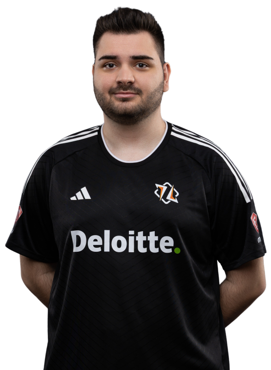
Symantec
ha vinto 1 Mondiale
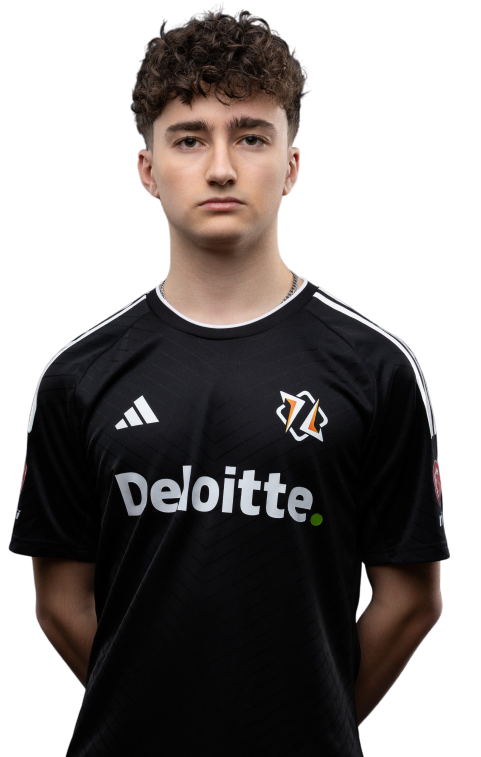
Lukii
ha vinto 1 Mondiale
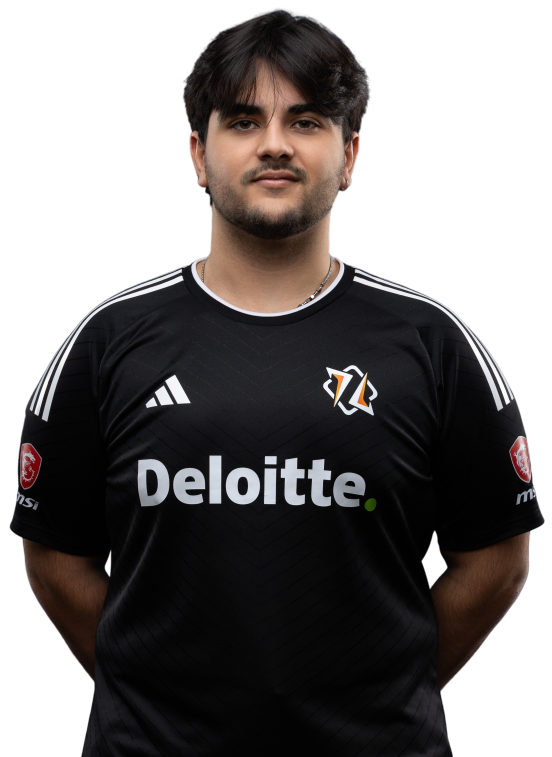
BosS
ha vinto 1 Mondiale
gli hmble sono un team di cui i suoi 3 giocatori si sono uniti nel 2024, spodestando i precedenti campioni. Symantec è stato il miglior giocatore del mondo del 2024 mentre oggi lukii se la gioca ed è sicuramente nella top 5. gli hmble sono da 2 anni considerati a pari merito il miglior team del mondo insieme ai Crazy Racoons.
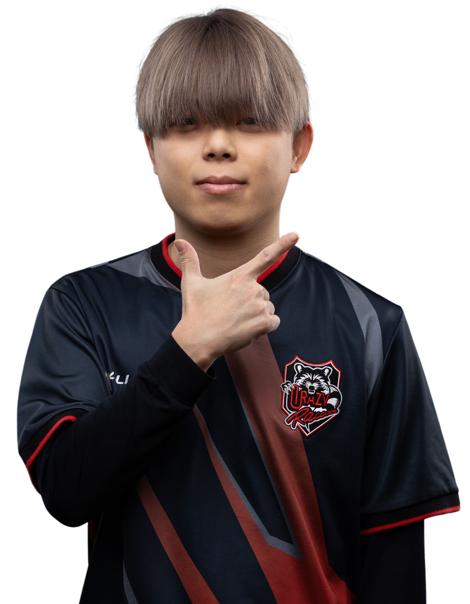
Tensai
ha vinto 3 Mondiali
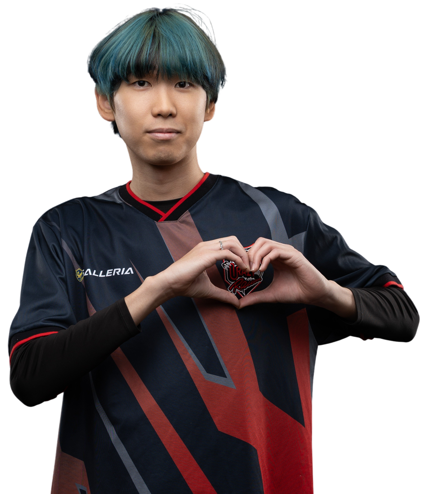
Moya
ha vinto 1 Mondiale
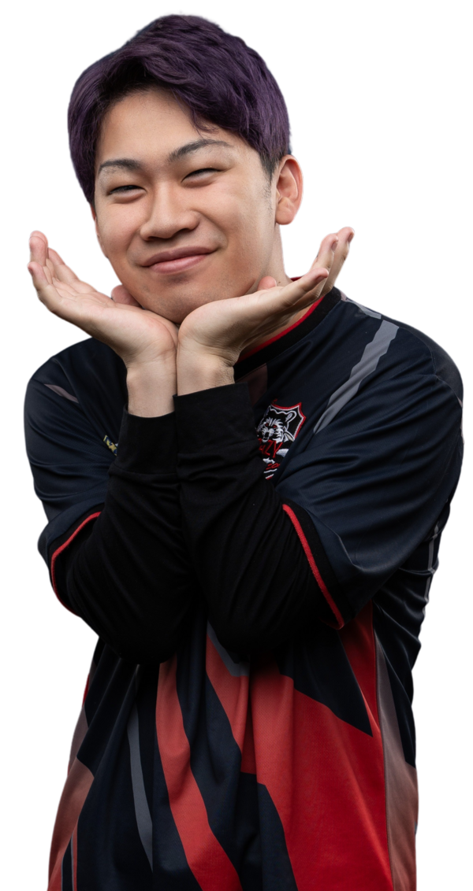
Milkreo
ha vinto 1 Mondiale
i Crazy Racoons sono gli attuali campioni del mondo. all'interno di questo team c'è Tensai, il giocatore più forte della storia ed unico con 3 mondiali vinti. la sinergia tra i giocatori è minore di quella degli hmble ma sono considerati i migliori a parita degli hmble.
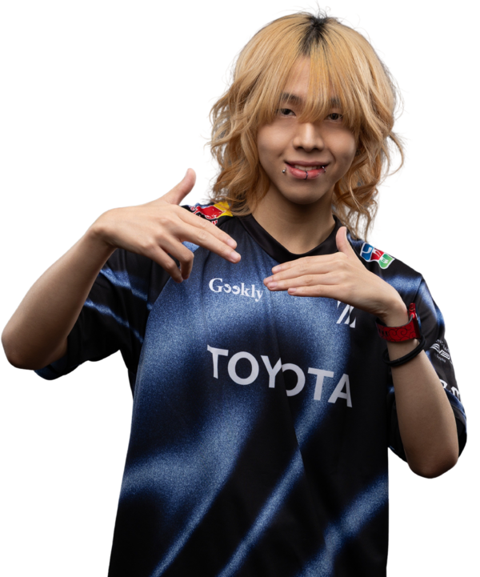
Sitetampo
ha vinto 1 Mondiale
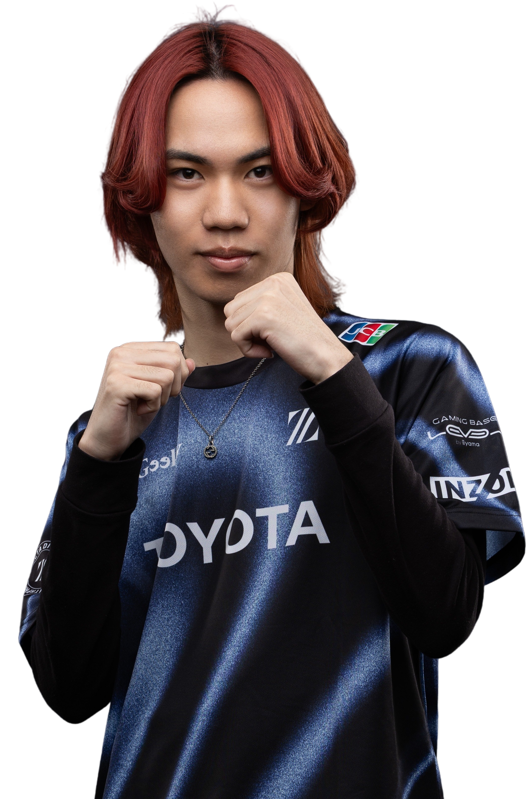
Sizuku
non ha mai vinto Mondiali
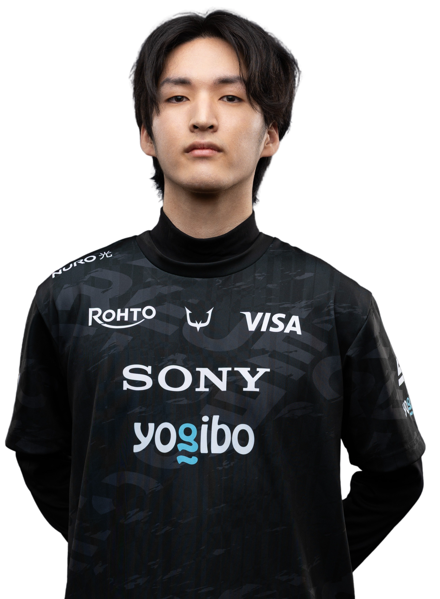
Battoman
non ha mai vinto Mondiali
gli Z Division sono un team giapponese che ha preso da quest'anno Battoman e hanno come giocatore principale Sitetampo, che ha vinto il mondiale 2021 insieme a Tensai. gli Z hanno avuto il massimo potenziale tra il 2021 ed il 2023, vincendo 3 mondiali. ad oggi gli z non sono nella top 5 dei team più forti.
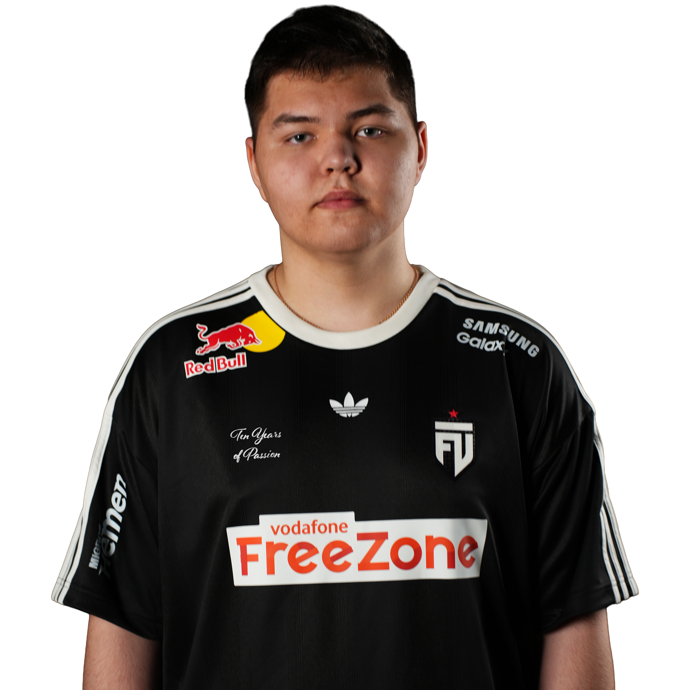
Guesti
non ha mai vinto mondiali
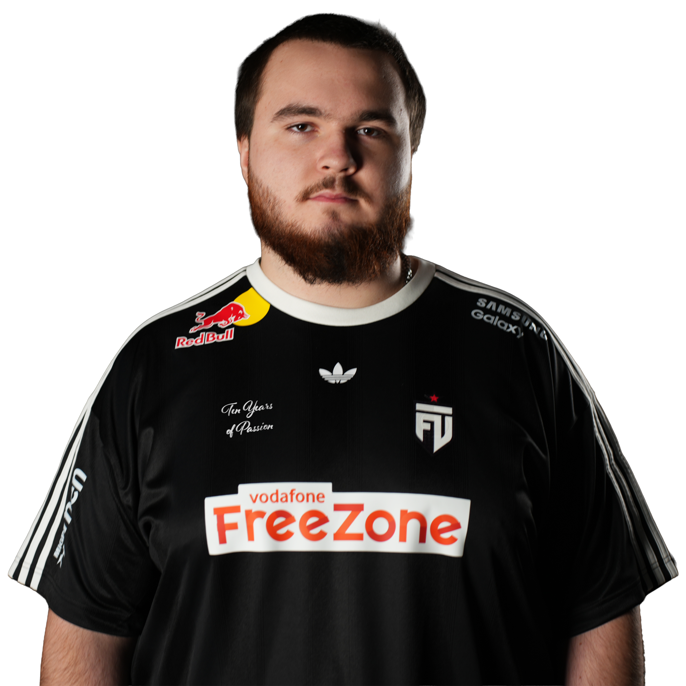
Angelboy
non ha mai vinto Mondiali
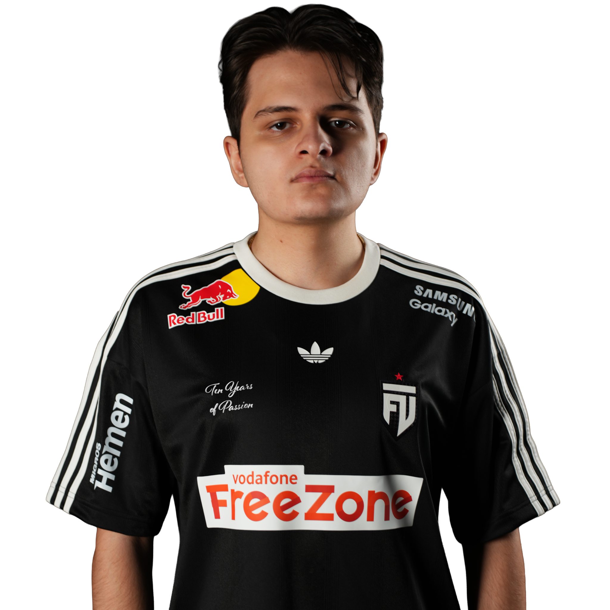
Nob?
non ha mai vinto Mondiali
i FUT sono un team europeo di cui il membro principale è Guesti, giocatore che ha iniziato quest'anno ma che sembra una promessa futura. gli altri membri sono meno rilevanti, ad esempio AngelBoy, un italiano che è stato recentemente buttato fuori dai Totem
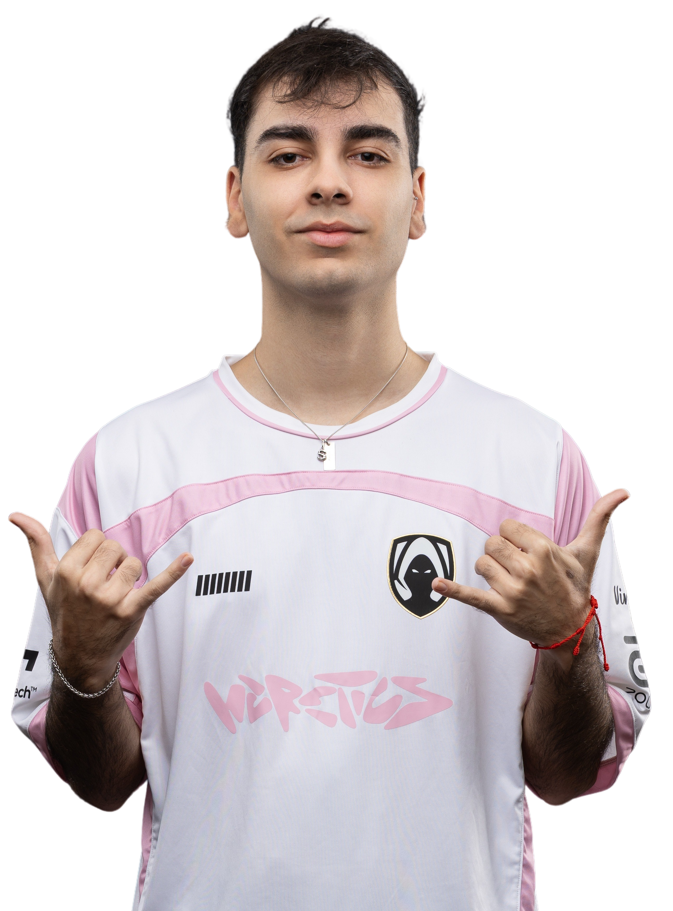
Ikaoss
non ha mai vinto mondiali
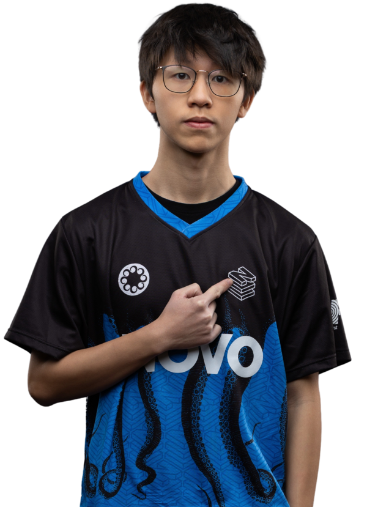
Marco
non ha mai vinto Mondiali
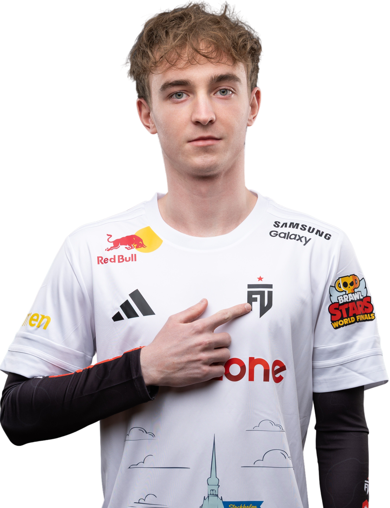
Nowy297
ha vinto 1 Mondiale
gli Heretics sono un Team Europeo che hanno come membro principale iKaoss, considerato il miglior stecca del gioco ma con anche controversie per il suo comportamento anti-sportivo nei confronti dei suoi alleati. Nowy297 ha vinto il mondiale nel ex team europeo degli Z e Marco è un giocatore italiano ex membro dei Novo.
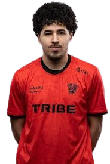
Lxffy
non ha mai vinto Mondiali
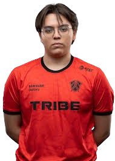
RBM
non ha mai vinto Mondiali
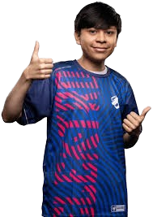
Diegogamer
non ha mai vinto Mondiali
I Tribe sono un team Nord Americano ed è l'unico film tra Nord e Sud America che riesca a giocare quasi alla pari con gli altri team, essendo arrivato più volte nei quarti e nelle semi finali.
Bobby
non ha mai vinto Mondiali
patchy
non ha mai vinto Mondiali
Sans
non ha mai vinto Mondiali
Gli only realm sono l'altro team Nord Americano che si qualifica per via dei 2 minimi per regione, senza veri giocatori degni di nota.
Protox
non ha mai vinto Mondiali
Prozy
non ha mai vinto Mondiali
Wesley
non ha mai vinto Mondiali
i Bounty Hunters Allu sono uno dei 2 Team Sud Americani che si qualificano per regola.
CaueBR
non ha mai vinto Mondiali
jubileu
non ha mai vinto Mondiali
Mohtep
non ha mai vinto Mondiali
gli eternal sono l'altro team Sud Americano che si qualifica senza mai ottenere particolari risultati.